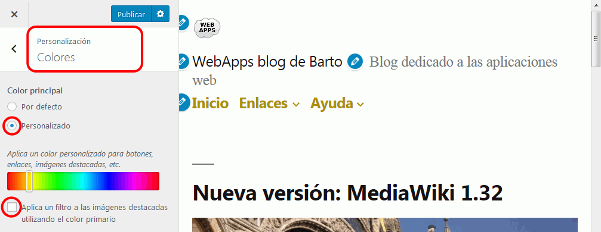
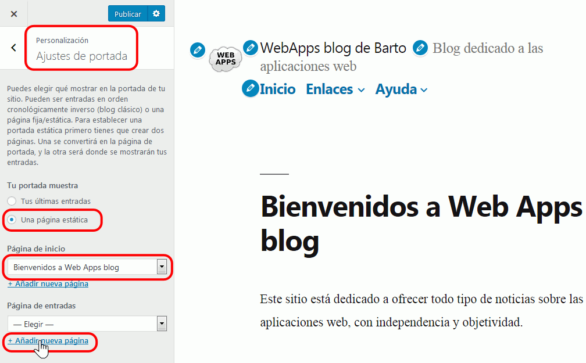
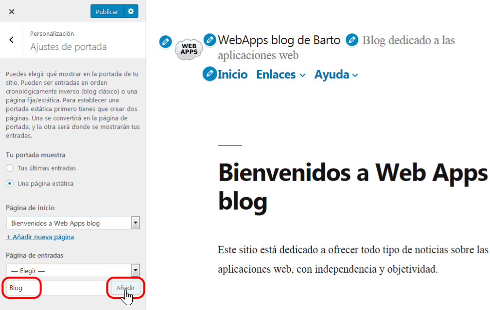
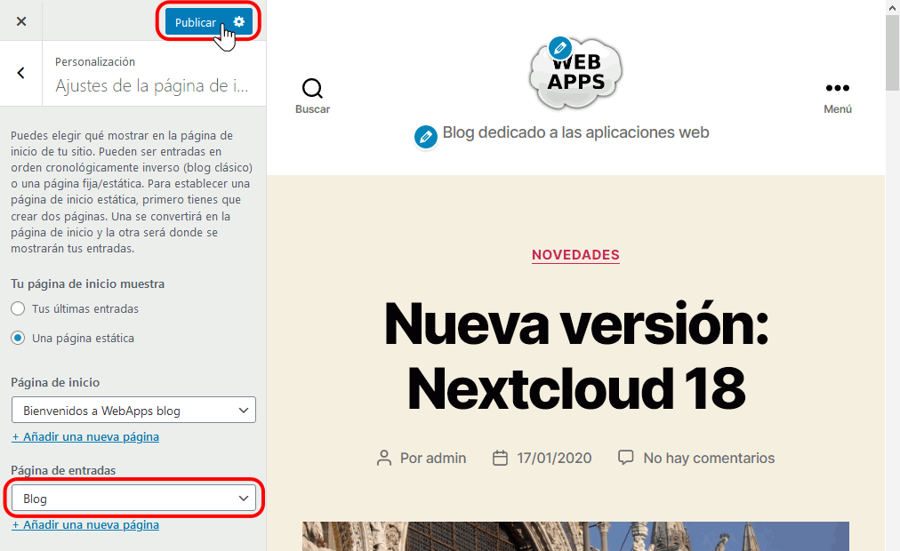

WordPress (4) 2 - Personalizar el tema Twenty Twenty
Para personalizar el tema predeterminado, elija el menú Apariencia > Personalizar.
- Icono del sitio
Elija el menú Apariencia > Personalizar > Identidad del sitio.
En el apartado "Icono del sitio", haga clic en "Seleccionar imagen" y seleccione el icono.
- Logotipo del sitio
Elija el menú Apariencia > Personalizar > Identidad del sitio.
En el apartado "Logotipo del sitio", haga clic en "Elegir logo" y seleccione la imagen.
- Colores
Elija el menú Apariencia > Personalizar > Plantilla de portada.
Para cambiar el color del filtro, haga clic en la opción Color de fondo de la superposición > Elegir color y elija un color:

Para desactivar el filtro de color, desmarque la casilla "Aplica un filtro ...":

- Página estática
Para crear la página estática:
- Cree la página que se convertirá en la página de inicio del sitio:

- Elija el menú Apariencia > Personalizar > Ajustes de la página de inicio. Marque el botón "Una página estática". Seleccione la página creada en la lista "Página de inicio". Haga clic en "Añadir nueva página".

- Escriba un nombre para la página que contendrá las entradas del blog y haga clic en "Añadir":

- Haga clic en Publicar:

- Compruebe en Páginas > Todas las páginas que las dos páginas son ahora la página de inicio y de entradas:

- Añada al menú principal un enlace a la página de entradas.
- Cree la página que se convertirá en la página de inicio del sitio:
- CSS adicional
/* Cabecera */ #site-header { background-color: hsl(0, 75%, 70%);} /* Logo */ img.custom-logo { clip-path: circle(60px at center); } /* Descipción del sitio */ div.site-description { color: black; } /* Menu */ nav.primary-menu-wrapper { background-color: hsl(359, 74%, 50%); } div.header-navigation-wrapper li.menu-item a { color: white; } div.header-navigation-wrapper ul.sub-menu { background-color: hsl(359, 74%, 50%); } div.header-navigation-wrapper ul.sub-menu li a:hover { background-color: hsl(357, 87%, 91%); } /* Entradas */ body { background-color: hsl(357, 87%, 91%); } p.has-background.has-background-background-color { background-color: hsl(357, 87%, 91%); } /* Widgets */ div.header-footer-group { background-color: hsl(0, 75%, 70%); } /* Pie */ footer#site-footer.header-footer-group { background-color: hsl(0, 75%, 70%); }